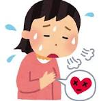
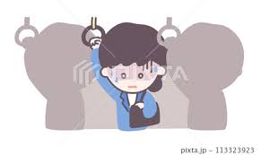

不安障害・強迫性障害のためのエクスポージャー
目次
1:身体的な不快感
2:状況回避とフラッディング
目次
1 : 身体的な不快感に対するエクスポージャー(曝露療法)

対象読者
呼吸困難感や心臓のドキドキなど交感神経系の興奮にかかわる不快感から失神や心臓発作を予期し恐れている方
対象疾患
パニック症・限局性恐怖症
2 : 状況回避とフラッディング

対象読者
電車やバス、会議、蜂、蛇など特定の状況や生き物に対して恐怖を感じ回避している方
対象疾患
パニック症・限局性恐怖症・PTSD・社交不安障害